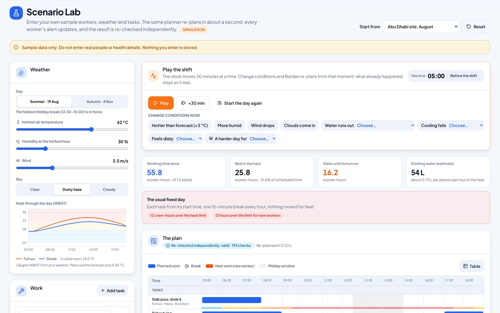
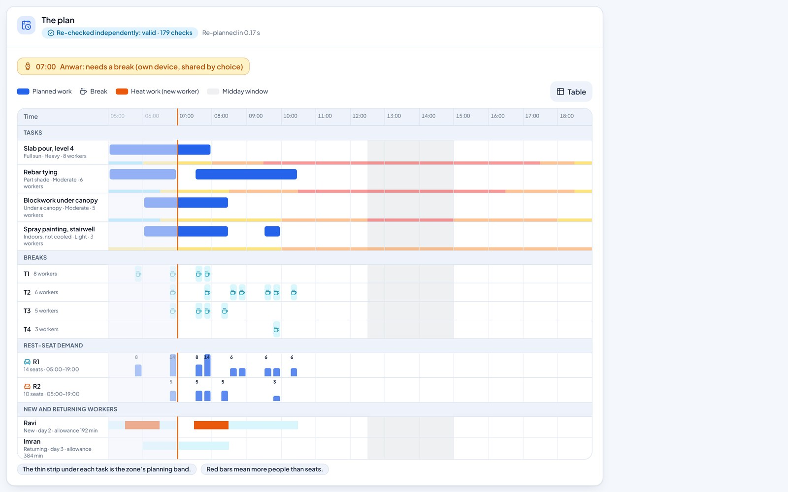
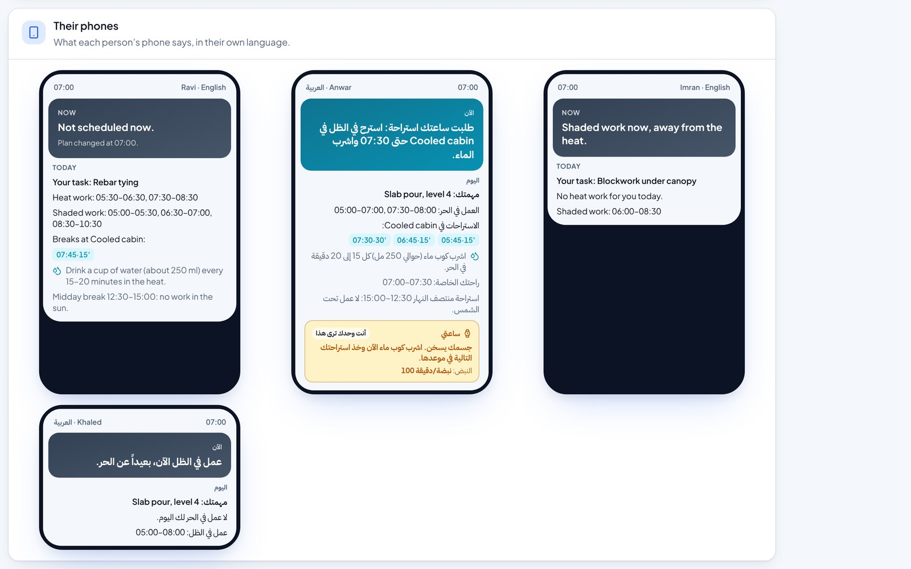
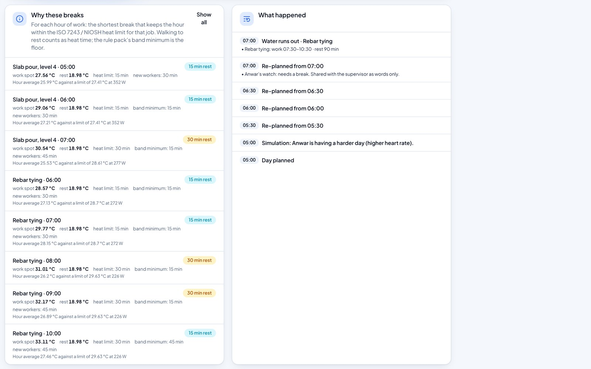

Scenario Lab and shift simulator · real screens, synthetic data
Your workers, your weather, your tasks. The plan and every phone answer in a second.

A
Enter your own scenarioWeather, tasks, named workers and rest areas. Every change re-plans and is re-checked independently; the usual fixed day is shown beside it.

B
Play the shiftHotter, more humid, water out, cooling fails, a worker feels dizzy: the plan changes from that minute, the past stays as it happened.

C
Every phone, in its own languageWhat each named worker sees now and today, in English or Arabic, including the optional watch that only its owner sees.

D
Why each breakThe shortest break that keeps each hour within the ISO 7243 / NIOSH limit for that job, with the rule pack as the floor.